Już od dłuższego czasu myślałem o tym żeby zbudować swój własny minikomputer. W internecie można znaleźć mnóstwo tego typu projektów, z moich ulubionych mogę wymienić oparty na procesorze 6502 komputer autorstwa Bena Eatera oraz oparty na CPU Intela MiniMax8085 Sergieja Malinova. Mój minikomputer postanowiłem jednak oprzeć na artykule opublikowanym na łamach czasopisma Nuts and Volts, autorstwa Davida Huntera. Dokładniej chodzi o artykuł Build a pocket-sized ALTAIR computer z początku 2019 roku.
Olbrzymią zaletą opisywanego w artykule komputera jest jego prostota. Podstawową wersję komputera, możemy zbudować przy pomocy zaledwie pięciu układów scalonych (CPU, RAM, ROM, 74LS373 oraz 74LS139). Dodatkowo do budowy komputera możemy wykorzystać płytki stykowe, dzięki czemu możemy się obejść bez lutownicy.
Pierwszą przeszkodą z jaką musimy się zmierzyć jest zakup procesora.
Oryginalny układa 8085 Intela jest już praktycznie niedostępny na rynku.
Na szczęście wciąż jeszcze można kupić kompatybilne z nim zamienniki.
Bardzo pomocna jest tutaj strona www.cpu-collection.de
która podaje ich długą i wyczerpującą listę.
Dla przykładu udało mi się kupić układ oznaczony jako SAB 8085AH2P,
który jak się okazało jest nadal dostępny w sklepie inter-chip.pl
(uprzedzam strona sklepu jest okropna).
Z kolei klon AMD P8085A zdaje się być dostępny w sklepie TVSAT-SHOP.pl
w nieco niższej cenie.
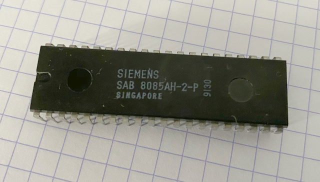
Na koniec pewna uwaga techniczna: dwójka znajdująca się przy końcu oznaczenia procesora np. SAB 8085AH2P
wskazuje na model który może być taktowany z częstotliwością do 5MHz. Układy bez dwójki np. AMD P8085A mogą być taktowane
zegarem do 3MHz. Warto dodać że procesor pracuje z połową częstotliwości podłączonego do niego
rezonatora kwarcowego (aka kryształu). Jeżeli więc chcemy taktować procesor z częstotliwością 5MHz, to powinniśmy
użyć kryształu 10MHz’owego. Z drugiej strony minimalna częstotliwość z jaką mogą pracować te procesory wynosi 1MHz,
czyli minimalna częstotliwość rezonatora kwarcowego to 2MHz.
Zakup pozostałych części nie powinien sprawić większych kłopotów. Pełna lista wymaganych komponentów podana jest w artykule pana Huntera, do tego potrzebować będziemy jeszcze stabilizowanego źródła zasilania 5V, trzech płytek stykowych, całej masy przewodów połączeniowych i kilku diod LED.
Do programowania pamięci EEPROM możemy wykorzystać popularny wśród hobbystów TL866II PLUS (cena około 300PLN). Prosty programator można również zbudować samemu z wykorzystaniem Arduino (patrz programator Bena Eatera oraz TommyPROM).
Do komunikacji z PC potrzebować będziemy jeszcze konwertera USB <-> UART
(aka FTDI), który możemy kupić za około 15PLN.
Przed podłączeniem konwertera do budowanego minikomputera, należy upewnić się
że zworka odpowiedzialna za wybór napięcia znajduje się w pozycji 5V:
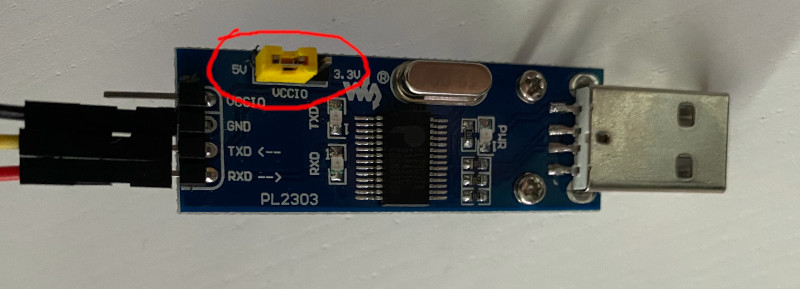
Po podłączeniu konwertera do komputera, system operacyjny powinien “wystawić” urządzenie jako nowy port szeregowy
np. COM3 w systemie Windows lub /dev/ttyUSB0 w systemie Linux.
Na koniec uwaga praktyczna: Układ 74HCT373 możemy zastąpić nowszym 74HCT573 który zdaje się mieć nieco bardziej rozsądny układ wyprowadzeń (wszystkie wejścia po jednej stronie układu). Zamiast 74HCT373 lub 74HCT573 możemy wykorzystać układ 74HCT574 zgodnie ze schematem: 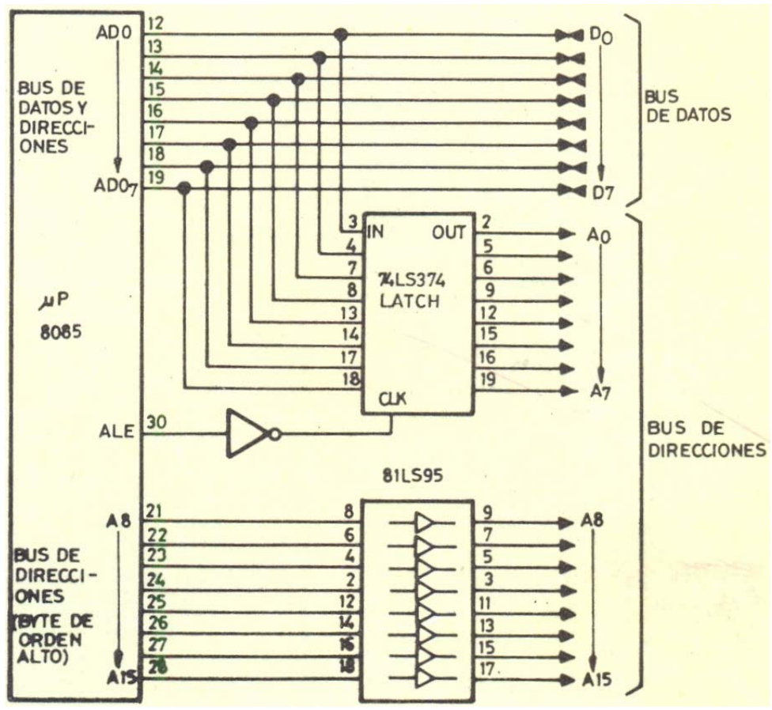 (źródło: Análisis general de un Microprocesador)
Jako inwerter można wykorzystać np. CD40106BE. Testowałem powyższą konfigurację z kryształem 4MHz i wszystko działało bez problemów.
Budowa i uruchomienie układu
Moje pierwsze podejście do budowy komputera wyglądało następująco:
umieściłem wszystkie niezbędne komponenty komputera na płytkach stykowych,
dwukrotnie sprawdziłem poprawności połączeń, podłączyłem konwerter USB <-> UART
i na koniec włączyłem zasilanie. I… nic.
Komputer nie pracował, a ja nie miałem pojęcia dlaczego.
Musiałem więc rozmontować cały układ i zbudować go jeszcze raz, tym razem
krok po kroku.
Rozpocząłem od podłączenie jedynie CPU, pamięci ROM oraz układu 74HCT573. 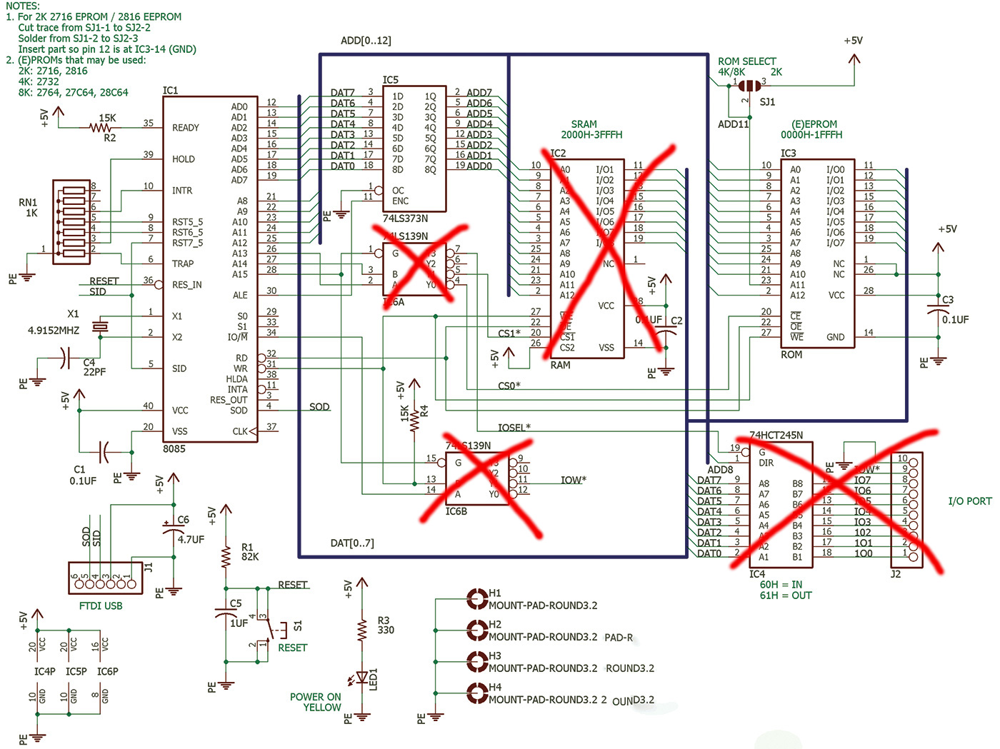 W tym układzie:
- Nóżki RD i WR procesora połączyłem przez oporniki 22k z plusem zasilania (+5V)
- Nóżkę WE pamięci ROM podłączyłem do plusa zasilania (zapis wyłączony)
- Nóżkę CE pamięci ROM podłączyłem do masy/GND (ROM włączony na stałe)
- Nóżkę OE pamięci ROM podłączyłem do nóżki RD procesora
- Nóżkę RST7_5 procesora odłączyłem od nóżki SID i zamiast tego połączyłem z masą zasilania przez opornik 1k
Do sprawdzenia czy procesor działa wykorzystałem pomysł pochodzący
z glitchwrks.com,
to jest wykorzystanie wyjścia SOD procesora do sterowania diodami LED:
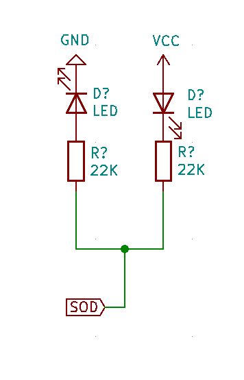
Ponieważ nasz “komputer” nie posiada jeszcze pamięci RAM to nie mogłem
wykorzystać zamieszczonego przez GlitchWorks kodu. Brak pamięci RAM
oznacza bowiem brak stosu wywołań funkcji. Innymi słowy rozkazy CALL
i RET nie działają w tej konfiguracji. Zamiast wywołań funkcji wykorzystałem
więc, będącą wciąż w powszechnym użyciu metodę Kopiego-Pasty:
ORG 0000H
FLASH MVI A,0C0h ; LED ON
SIM
MVI A,0FFh ; Wait about half a second
DELAY DCR A
JZ CLEAR
BLOOP MVI B,0FFh
BLOOP2 DCR B
JNZ BLOOP2
JMP DELAY
CLEAR MVI A,040h ; LED OFF
SIM
MVI A,0FFh ; Wait about half a second
DELAYx DCR A
JZ FLASH
BLOOPx MVI B,0FFh
BLOOP2x DCR B
JNZ BLOOP2x
JMP DELAYx
HLT
HERE JMP HERE
END FLASHPowyższy kod nie należy do najbardziej czytelnych i pięknych, ale pozwoli nam przetestować działanie komputera.
Kod skompilowałem za pomocą wspomnianego w artykule assemblera a85, który co prawda potrafi zgłaszać enigmatyczne błędy, ale posiada całkiem przyzwoity manual. No cóż przyjaciele, RTFM!
$ ./a85 test.asm -o test.hex
# Pamiętajcie żeby użyć poprawnego typu pamięci
$ minipro -p AT28C64 -w test.hex Opensource’owe oprogramowanie do programatora TL866 II PLUS
dopiero od kilku miesięcy obsługuje format Intel HEX.
Jeżeli dostaniecie komunikat o nieznanym formacie pliku spróbujcie uaktualnić minipro do
najnowszej wersji.
Tym razem wszystko poszło zgodnie z planem i mogłem przez kika minut delektować się mruganiem diod LED.
W kolejnym kroku dodałem do komputera układ 74HTC139 (nowszy zamiennik 74LS139) zgodnie ze schematem zamieszczonym w artykule i przekonałem się że dioda LED nadal miga.
Kolejny krok polegał na dodaniu modułu RAM, który pracowicie połączyłem z resztą komputera: 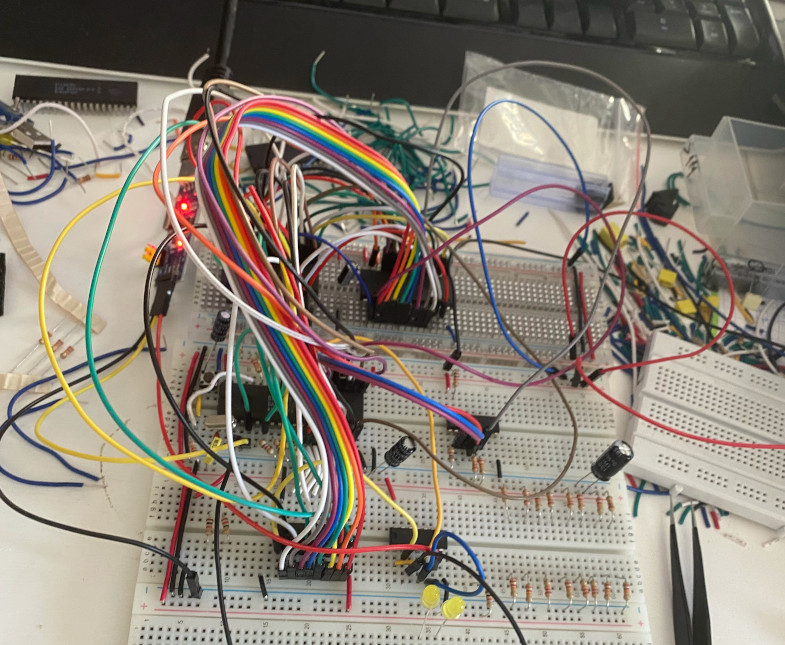 Diody nadal migały, ale teraz mogłem spróbować uruchomić na moim komputerku oryginalny kod z GlitchWorks:
ORG 0000H
START LXI H,02060h
SPHL
FLASH MVI A,0C0h
SIM
CALL DELAY
MVI A,40h
SIM
CALL DELAY
JMP FLASH
;Delay, return to HL when done.
DELAY MVI A, 0FFh
MOV B,A
PT1 DCR A
PT2 DCR B
JNZ PT2
CPI 00h
JNZ PT1
RET
END FLASHPo kompilacji, wgraniu programu i uruchomieniu komputera diody nadal migały - hurra!
OK pora spróbować uruchomić oprogramowanie przygotowane przez Huntera.
Zanim jednak podłączyłem konwerter USB <-> UART do komputera, połączyłem ponownie nóżkę SID procesora z nóżką RST7_5
i jeszcze raz sprawdziłem wszystkie pozostałe połączenia.
Pin GND konwertera USB <-> UART podłączyłem do masy zasilania, pin SOD procesora połączyłem z pinem RDX konwertera,
a pin SID z pinem TXD. Pin VCC konwertera pozostał niepodłączony.
Po kompilacji pliku AltaidsROM.asm i wgraniu programu do EEPROM uruchomiłem Putty żeby móc
odbierać komunikaty wysyłane z komputera. Użyłem następującej konfiguracji (2400 baud, 8N1, Flow control: None):
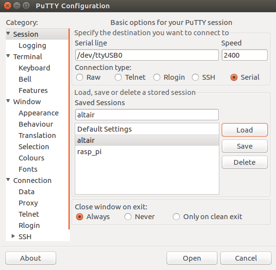
Niestety jedyne co mogłem odczytać to wydawałoby się losowe znaki. Problemem okazała się częstotliwość z jaką pracował
mój mikrokomputer, ale sam byłem sobie winny - zamiast kryształu 4.9152MHz użyłem kryształu 4MHz.
Na szczęście, jak sugeruje pan Hunter, jest to proste do naprawienia - wystarczy nadać stałym HALFBIT i FULLBIT
(patrz AltaidsROM.asm) odpowiednio przeskalowane wartości. Ponieważ użyta przeze mnie częstotliwość procesora to
2MHz (= 4MHz / 2) to musiałem przeskalować i zaokrąglić oryginalne wartości do:
s = 2 / 2.4576
HALFBIT = s * 38 = 31
FULLBIT = s * 69 = 56Obie stałe wykorzystywane są do obliczenia czasu transmisji pojedyńczego bitu (i jego środka) przy szybkości transmisji 2400 baudów.
Po uruchomieniu komputera powitał mnie następujący widok: 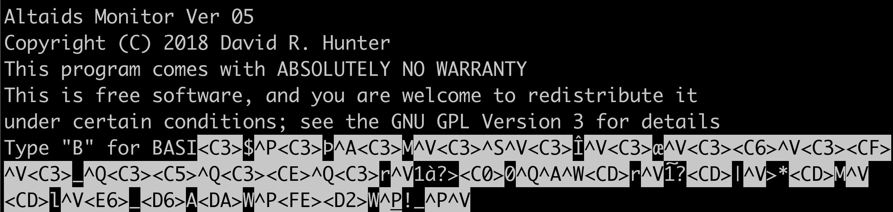 Połowa tekstu była czytelna, połowa zawierała śmieci. Sam komputer nie zachowywał się poprawnie. Po około godzinie debugowania i zbyt dużej ilości CLUB-MATE udało mi się znaleźć problem: źle podłączoną linię adresową A11.
Szybko naprawiłem to niedopatrzenie. Tym razem wszystko działało poprawnie a ja mogłem wpisać i uruchomić prosty program w BASIC’u (przy wpisywaniu musiałem zachować około jednosekundowy odstęp pomiędzy kolejnymi znakami, wspierane są tylko duże litery): 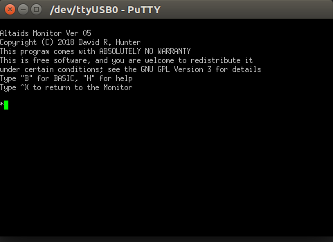 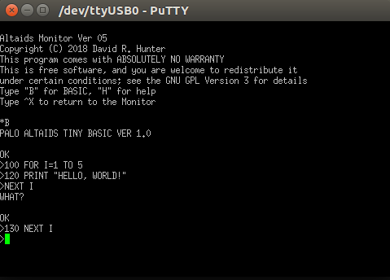 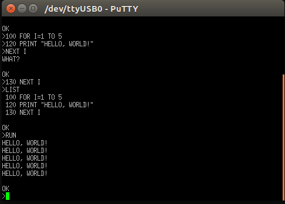
Koniec części pierwszej. Ciąg dalszy nastąpi…